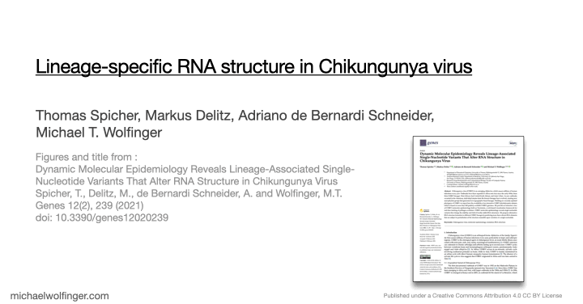

Publications » Lineage-specific RNA structure in Chikungunya virus Figures and Data  Download PDF Citation Dynamic Molecular Epidemiology Reveals Lineage-Associated Single-Nucleotide Variants That Alter RNA Structure in Chikungunya Virus Thomas Spicher, Markus Delitz, Adriano de Bernardi Schneider, Michael T. Wolfinger Genes 12 (2):239 (2021) | doi:10.3390/genes12020239 | PDF